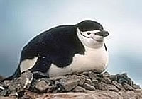

Anatomy and biology
The Chinstrap Penguin stand about 28 inches (72 centimetres) tall and weigh about 9 to 14 pounds. (3.5 to 5 kilograms). The weight of the adults vary during the year. Chinstrap Penguins are the heaviest during the molting season and the lightest during the brooding period.
Chinstrap penguins have a white front and throat, red eyes and a black back. They have a distinctive black band that runs from one side of the head under the bill to the other side of the head, resembling a chin strap. Their coat of feathers is dense for insulation and water proofing and they have a thick layer of blubber as an energy store. The chicks have grey backs and white fronts.
